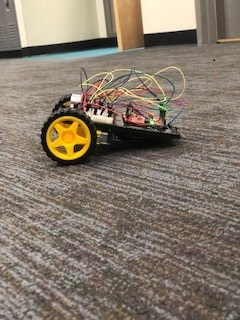

An arduino car
my first attempt at a self-functioning carThe very first group project in Computer Science class was building a remote-controlled robot car in groups of three.
Since this was our very first computer science class arduino and coding was foreign to most of the classroom. Following directions and images from SparkFun Inventor's Kit Experiment Guide we were able to build circuit 5B.
The satisfaction of creating a device controlled by your computer is truly immense.
